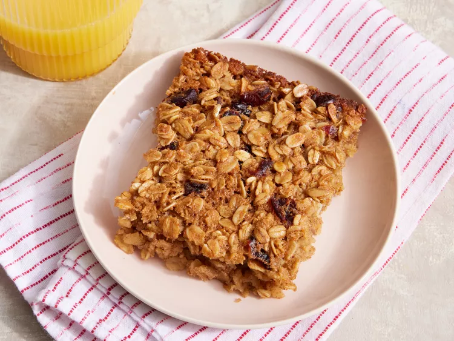

Baked Oatmeal
Odin Recipes

Description
This baked oatmeal recipe hails from Pennsylvania Amish country. Everyone who tries it loves it! Serve this comforting dish topped with milk.
Ingredients
- 3 cups rolled oats
- 1 cup brown sugar
- 2 teaspoons ground cinnamon
- 2 teaspoons baking powder
- 1 teaspoon salt
- 2 eggs
- 1 cup milk
- ½ cup melted butter
- 2 teaspoons vanilla extract
- ¾ cup dried cranberries
Steps
- Gather all ingredients. Preheat the oven to 350 degrees F (175 degrees C).
- Mix together oats, brown sugar, cinnamon, baking powder, and salt in a large bowl.
- PoBeat in eggs, milk, melted butter, and vanilla extract. Stir in dried cranberries.
- Spread into a 9x13-inch baking dish.
- Bake in the preheated oven until top is golden, about 40 minutes. Serve and enjoy!